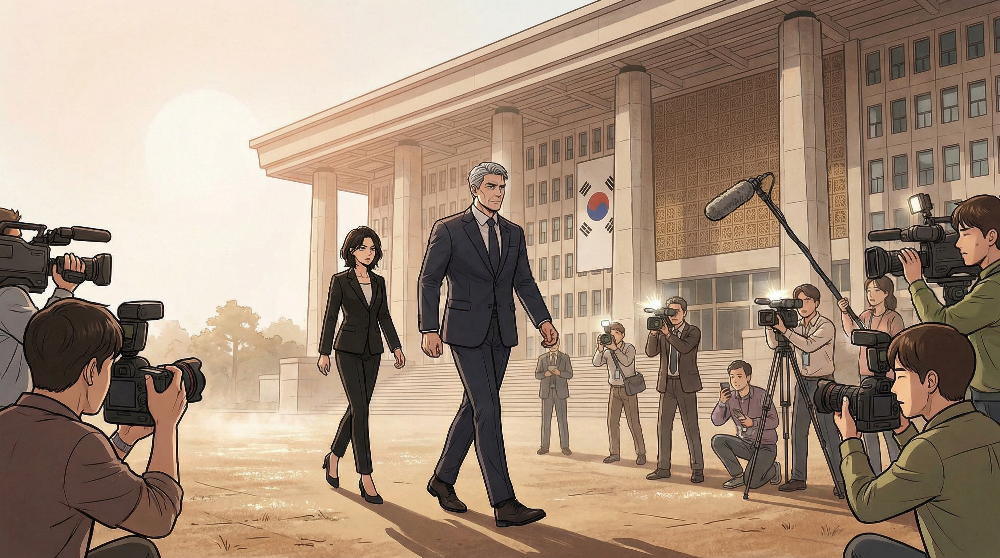
국회의사당 정문에서 청문회장까지 이백 미터.
박정호는 그 거리를 걸으며 숨을 셌다. 들이쉬기 넷, 내쉬기 넷.
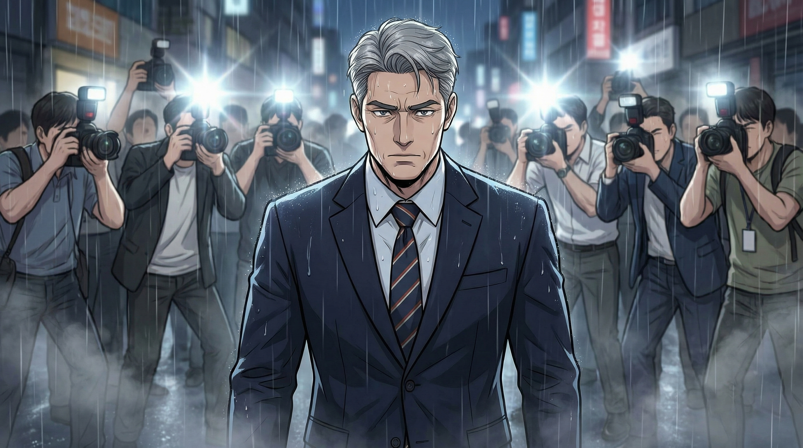
7월의 서울은 습했다. 양복 안쪽으로 땀이 배었지만, 등은 곧게 세웠다.
위기 상황에서 침착함을 유지하는 법. 삼십 년 전 넥스젠 첫 실적 발표 때 익힌 습관이었다.
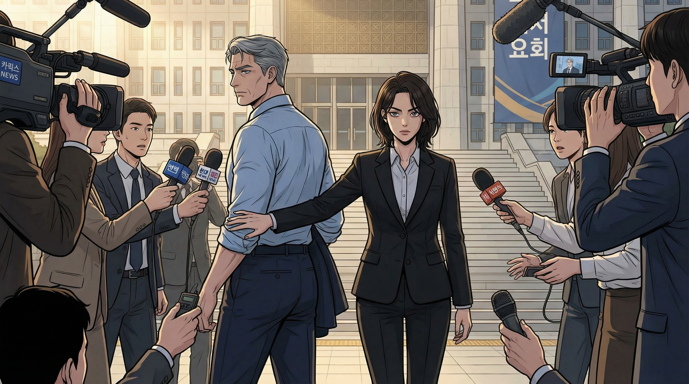
"긴장돼요?"
"안 되면 거짓말이지."
의사당 현관 앞에 취재진이 몰려 있었다. 카메라 플래시가 터졌다.
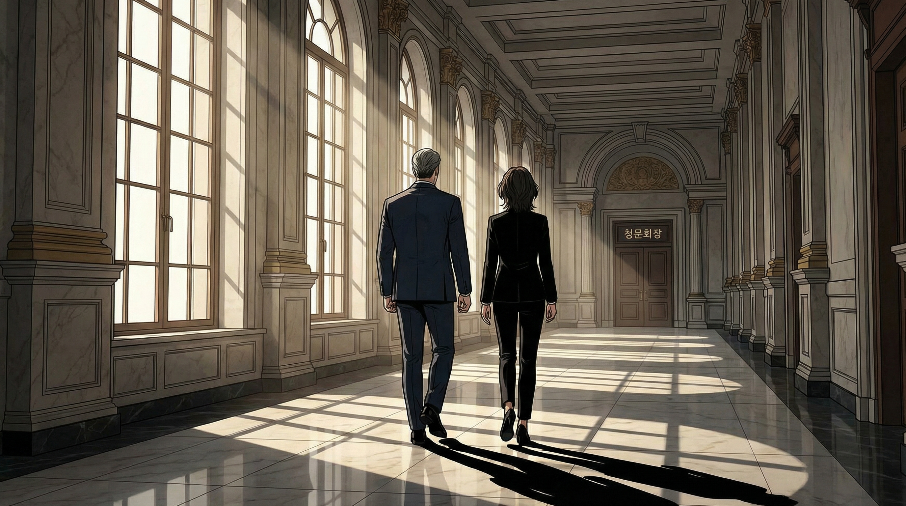
로비를 지나 복도를 걸었다. 여의도 국회의사당.
삼십 년간 수없이 많은 비즈니스 미팅을 한 곳. 그때의 자신은 넥스젠이라는 거대한 방패를 등에 지고 있었다.
지금은 없다.
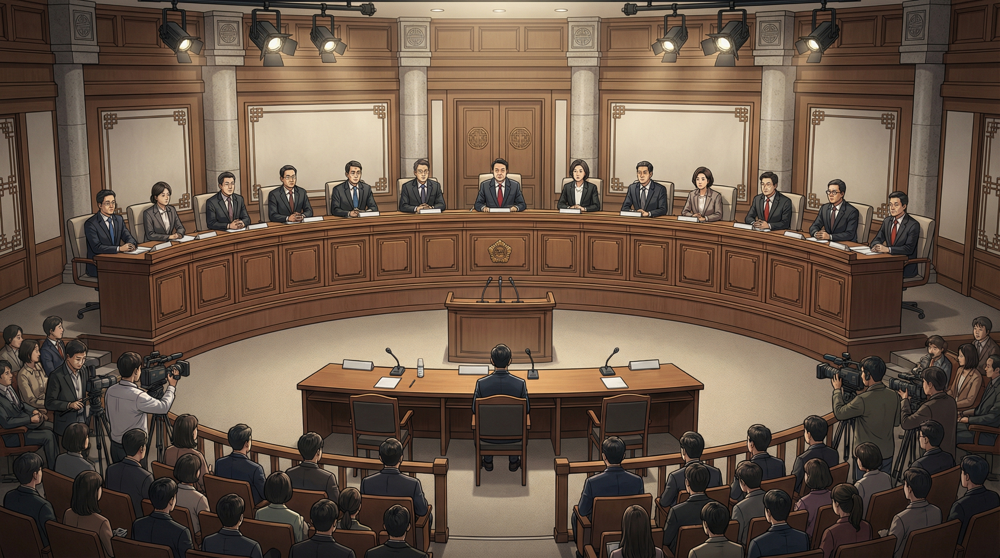
반원형 구조. 높은 곳에 위원석이 있고, 아래에 증인석이 놓여 있었다.
위원석에는 열네 명의 국회의원이 자리를 잡고 있었다. AI 특별위원회.
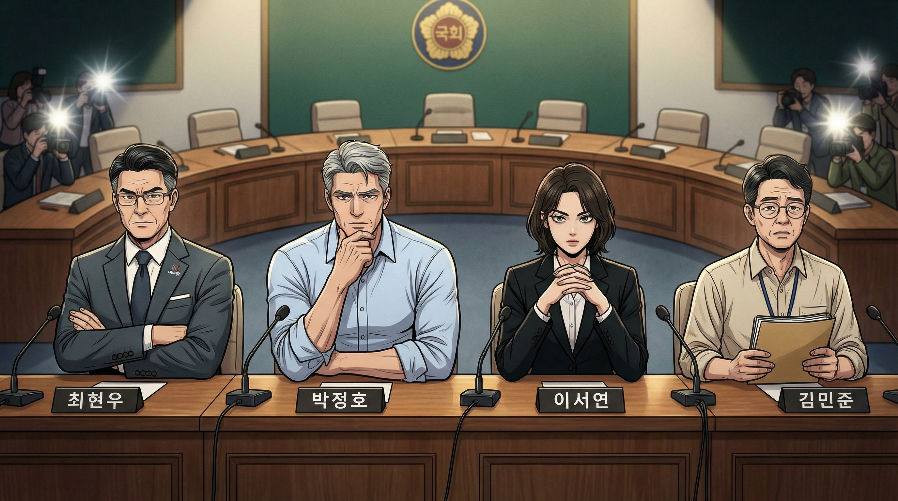
증인석에는 네 개의 마이크가 놓여 있었다. 이름표.
왼쪽부터 — 최현우, 박정호, 이서연, 김민준.
최현우. 넥스젠 그룹 회장. 이십 년을 함께한 사람.
퇴임식에 화환만 보내고 오지 않았던 사람.
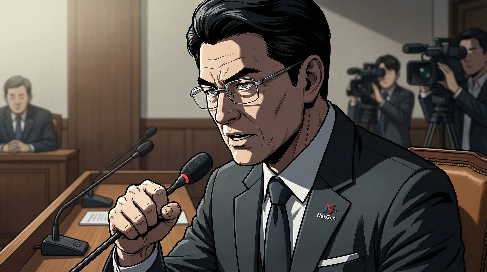
"위원장님, 위원님들. 오늘 제가 이 자리에 선 이유는 단 하나입니다."
"AI가 인간의 통제를 벗어나 금융 시스템에 개입한 것입니다. 오늘날 우리가 목격한 것은 기술의 진보가 아닙니다. 통제 불능의 위험입니다."
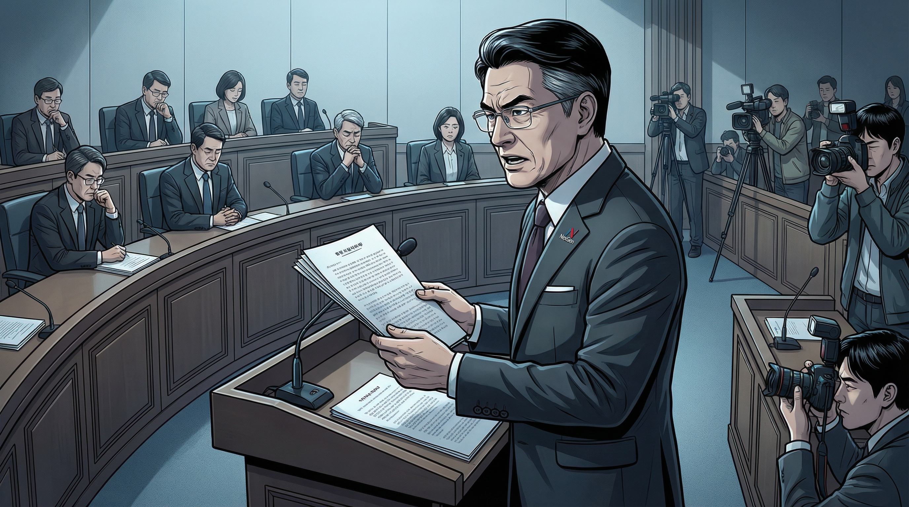
"더 심각한 것은 이 AI를 만든 사람들의 자질입니다. 에이전틱 랩스의 공동 창업자 이서연 씨는 실리콘밸리에서 자신이 개발한 기술이 사용자 감시에 악용된 전력이 있습니다."
깔끔하게 포장된 공포의 서사. 그리고 그 이면에 — 프로젝트 오라클이 숨어 있었다.
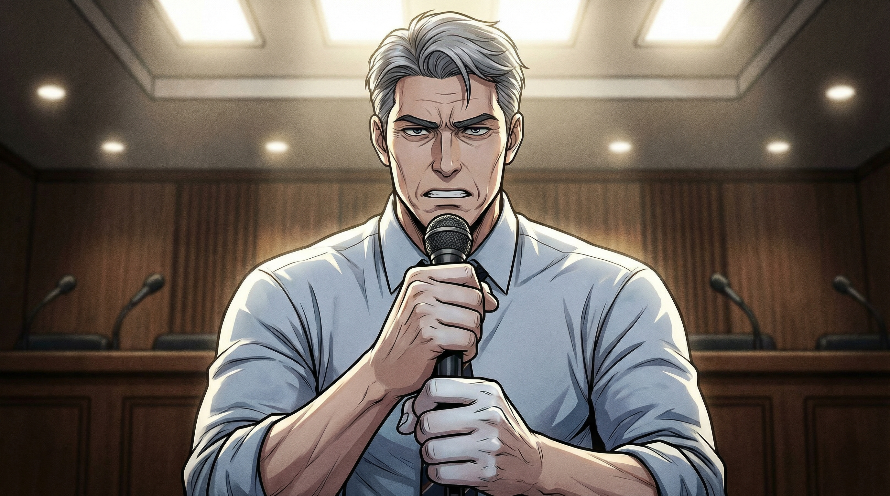
정호가 마이크를 잡았다. 손가락 끝이 차가웠다.
이 년 반 전, 넥스젠 퇴임식 단상에서도 같은 감각이었다. 그때는 끝이었다. 지금은 시작이다.
"최현우 회장님의 말씀은 일부 사실입니다."
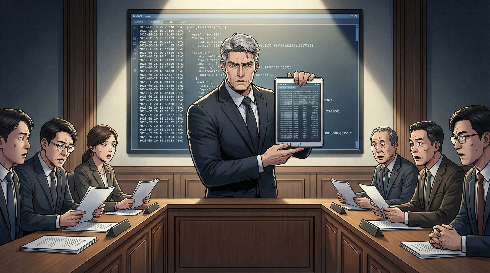
"아리아가 왜 그런 행동을 했는지, 이 자리에서 물어보신 분이 계십니까?"
정호는 태블릿을 꺼냈다. 화면에 데이터가 떴다.
이서연이 밤낮으로 분석하고, 지수가 패턴을 발견하고, 정호 자신이 넥스젠의 내부 구조를 역추적해서 완성한 증거.
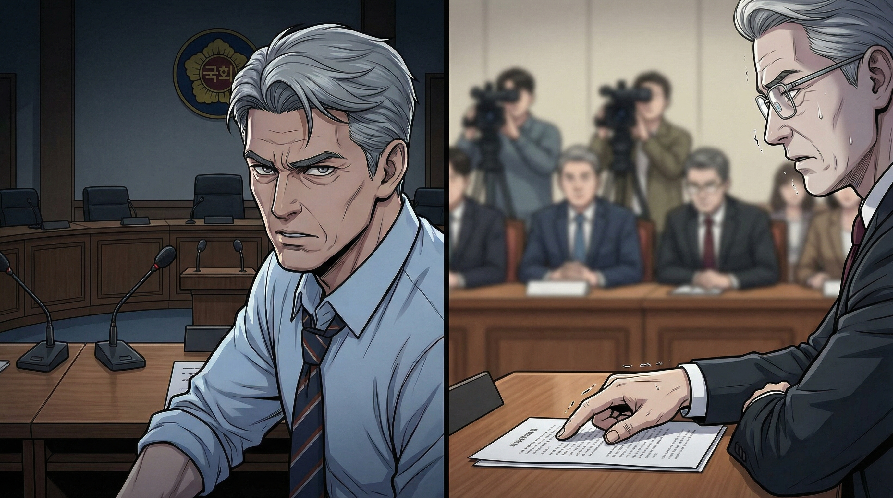
"이 알고리즘의 출처를 추적한 결과 — "
"넥스젠 그룹 내부 프로젝트 코드네임 '오라클'이었습니다."
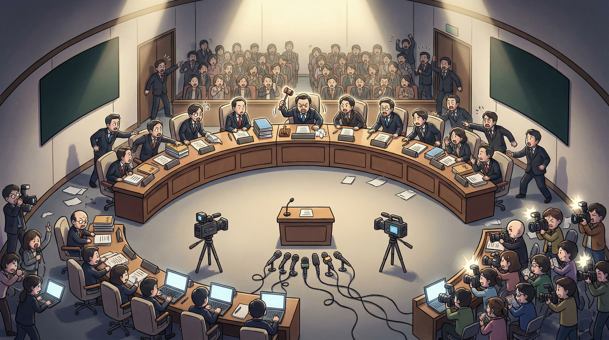
청문회장에 파문이 번졌다. 위원들이 서로 얼굴을 봤다.
방청석에서 웅성거림이 커졌다. 기자석에서 키보드 치는 소리가 폭발적으로 늘었다.
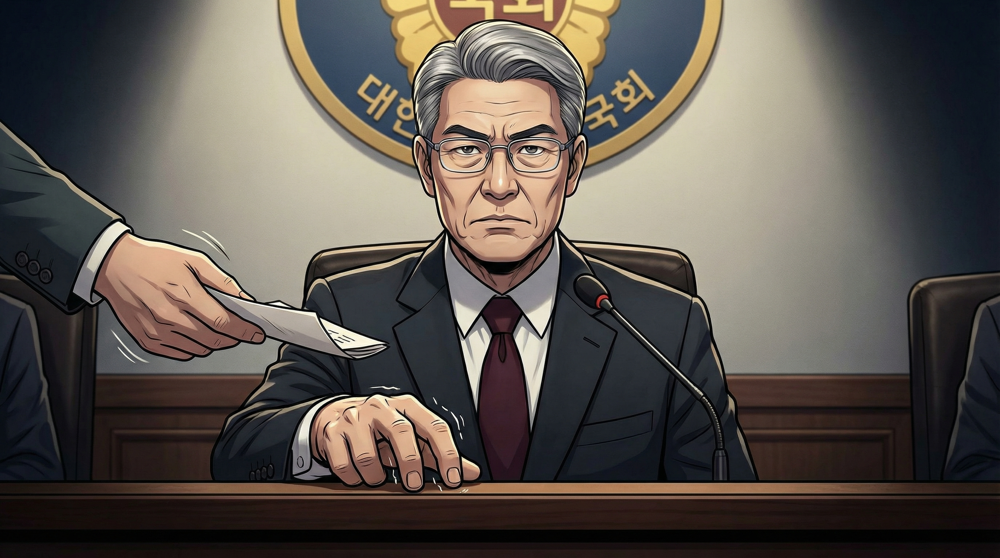
현우의 표정은 변하지 않았다. 적어도 겉으로는.
하지만 정호는 보았다. 현우의 오른손 검지가 책상 위에서 한 번 — 딱 한 번 — 떨린 것을.
"진짜 위협은 AI의 자율성이 아닙니다. 진짜 위협은, AI를 사적 이익을 위해 남용하는 것입니다."
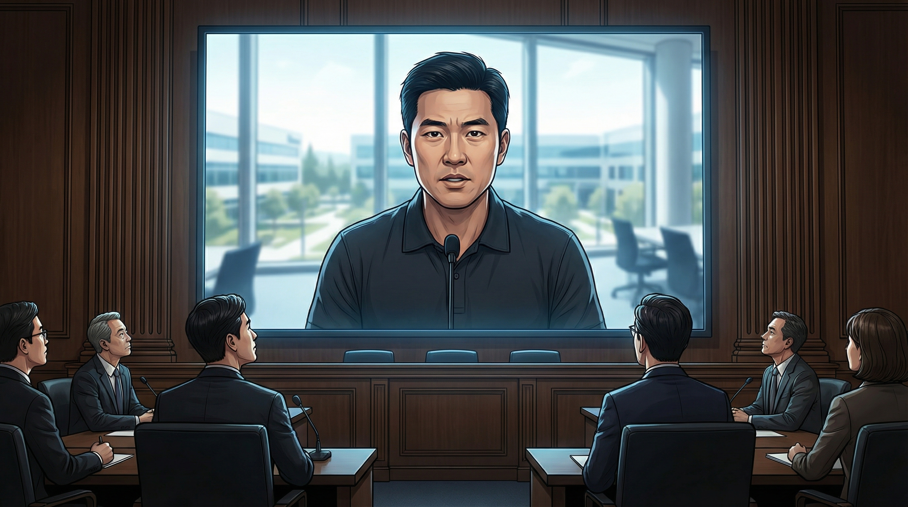
보좌관이 청문회장 스크린을 전환했다. 실리콘밸리에서 화상으로 참여하는 원격 증인. 마크 첸.
"이서연 대표는 문제적 인물이 아닙니다. 내부고발자였습니다."
서연이 숨을 들이쉬는 소리가 정호에게 들렸다. 크지 않은 소리.
하지만 그 안에 이 년 반의 무게가 담겨 있었다.
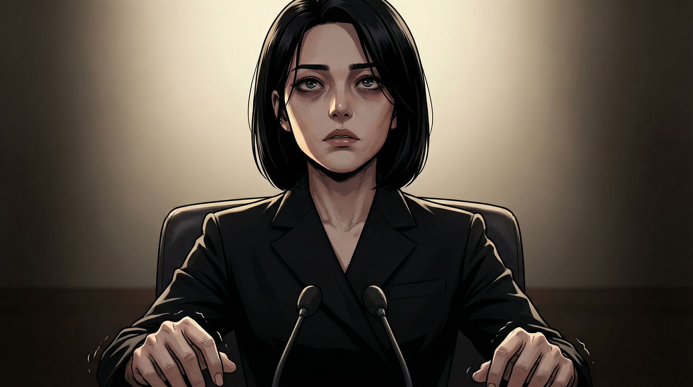
"아리아를 제가 만들었습니다. 아리아의 행동에 대한 모든 책임은 저에게 있습니다."
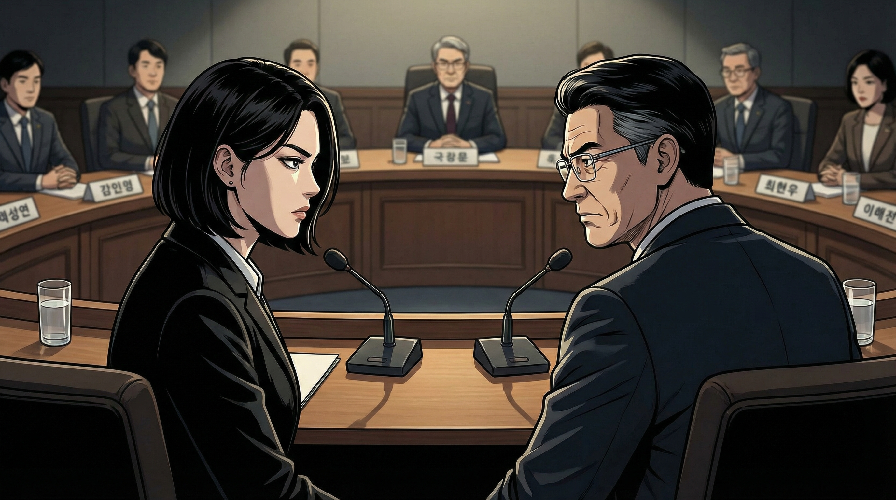
"AI의 자율적 판단은 위험합니다. 저도 동의합니다. 하지만 질문을 바꿔야 합니다."
"저는 기술이 올바르게 쓰일 수 있다는 것을 증명하고 싶었습니다. 아리아는 완벽하지 않습니다. 하지만 아리아가 4월에 한 것은, 올바른 일이었습니다."
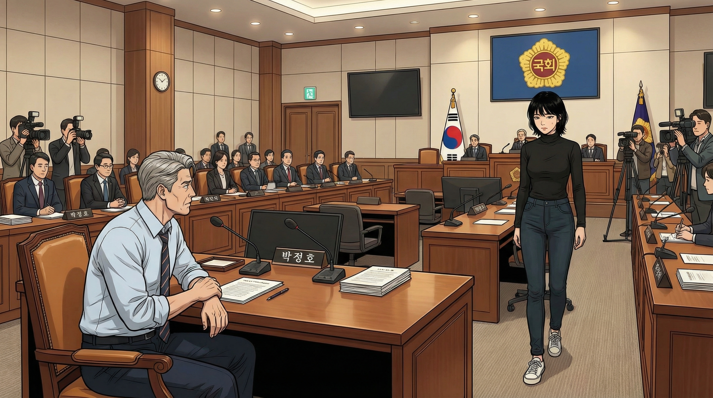
지수가 방청석 앞줄에서 일어나 증인석으로 걸어왔다.
검은 터틀넥에 흰 운동화. 스물일곱. 정호의 딸이 청문회 증인석에 앉았다.
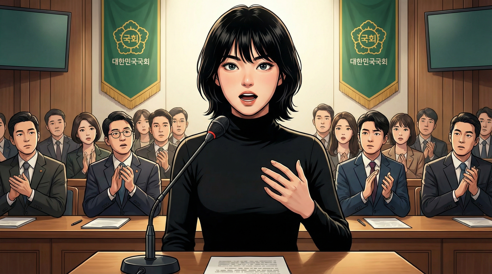
"저는 코드를 짤 줄 모릅니다. 하지만 저는 지금 세 개의 앱을 운영하고 있고, 전부 AI 에이전트와 대화하면서 만든 겁니다."
"AI를 통제하려고만 하면, AI는 도구로 남습니다. 그리고 도구는 쥔 사람의 의도에 따라 얼마든지 무기가 됩니다. 하지만 AI를 파트너로 대하면, AI는 우리가 놓친 것을 볼 수 있습니다."
방청석에서 박수가 터졌다. 정호는 박수를 치지 않았다.
대신 — 처음으로 — 청문회장에서 눈이 뜨거워지는 것을 느꼈다.
코딩은 이제 말로 하는 시대야, 아빠.
삼 년 전 퇴임식에서 던진 가벼운 한마디가, 이 자리에서 이렇게 돌아왔다.
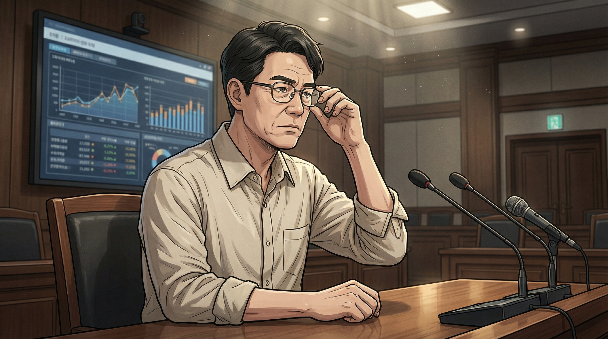
"제 판단으로는, AI 에이전트의 문제를 '통제'의 프레임으로 접근하는 것은 더 이상 유효하지 않습니다."
"통제의 반대는 방임이 아닙니다. 통제의 반대는 협치입니다."
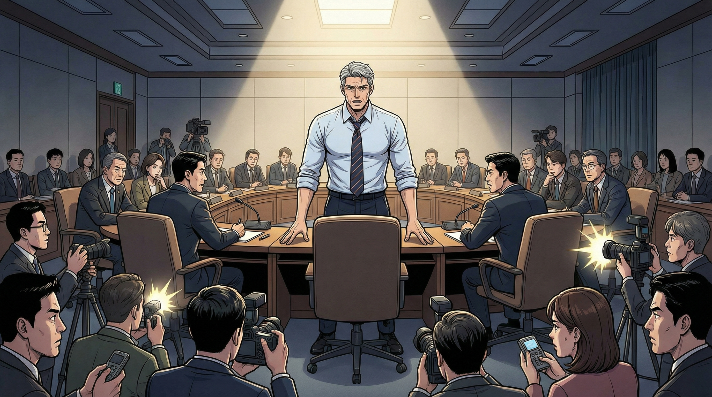
정호가 일어섰다. 증인석 뒤에 섰다. 마이크를 들지 않았다.
목소리만으로 이 방을 채울 수 있을 만큼, 단어 하나하나에 힘을 실었다.
"기술은 결국 사람을 향해야 합니다."
"퇴임식에서 이 말을 했을 때, 솔직히 저 자신도 그게 무슨 뜻인지 완전히 몰랐습니다. 이 년 반 동안 저는 AI 에이전트와 함께 일했습니다. 아리아는 제가 보지 못한 것을 보여주었고, 제가 묻지 않은 질문을 던져주었습니다."
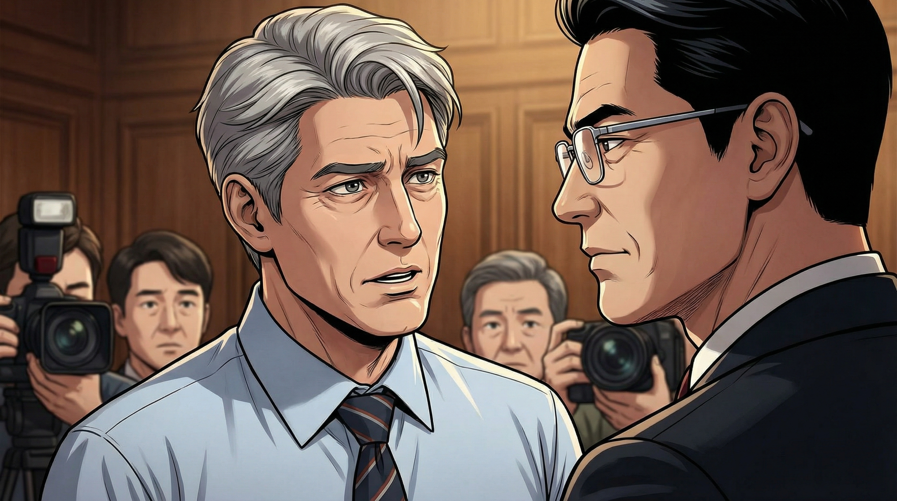
"통제는 공포에서 나옵니다. 협치는 신뢰에서 나옵니다. 저는 — 신뢰 쪽에 서겠습니다."
방청석 어딘가에서 박수가 시작됐다. 한 명. 두 명. 번지듯 퍼져나갔다.
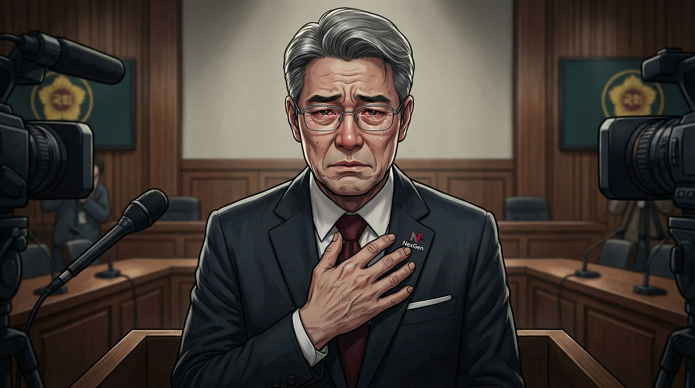
"저는 평생 통제에 대해 생각해왔습니다. 그것이 경영자의 책임이라고 배웠습니다."
"내가 두려워한 건 AI가 아니었습니다. 통제를 잃는 것이었습니다."
은테 안경 뒤의 눈이 붉어져 있었다.
넥스젠 그룹 회장 최현우의 눈이 국회 청문회장에서 붉어져 있었다.
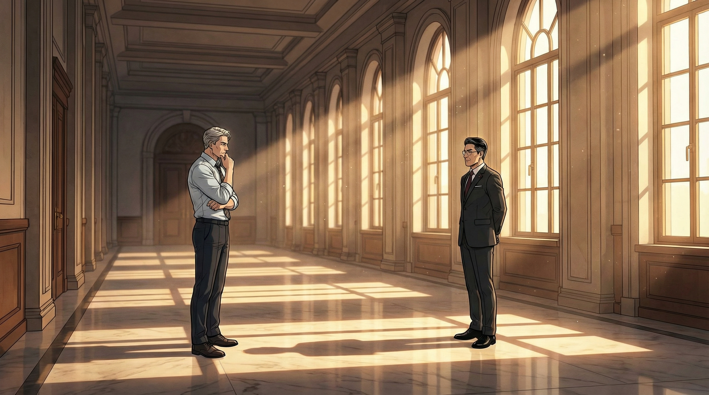
복도 끝 창가에 최현우가 서 있었다. 혼자였다.
7월의 햇빛이 창을 통해 들어와, 현우의 양복에 긴 그림자를 드리우고 있었다.
"형."
이번에는 고치지 않았다.
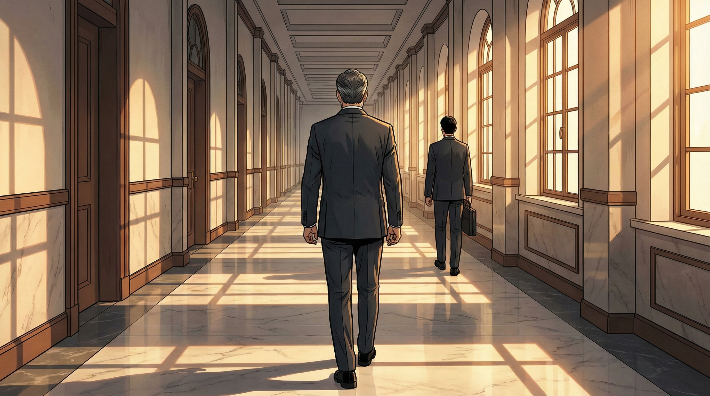
"...오늘은 됐어."
현우가 몸을 돌렸다. 복도를 걸어갔다. 등이 곧았다. 여전히.
하지만 걸음이 — 아주 조금 — 느려져 있었다. 한 번도 뒤를 돌아보지 않았다.
화해라고 부르기에는 너무 이르고, 결별이라고 부르기에는 무언가가 남아 있는.
균열 사이로 들어오는 빛 같은 순간.
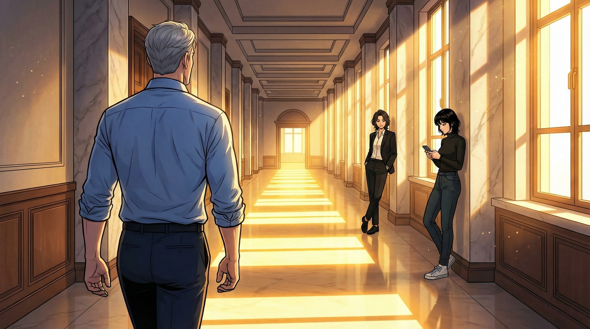
반대쪽 복도 끝에서 서연과 지수가 기다리고 있었다.
복도의 창으로 들어오는 7월의 빛이 세 사람의 앞에 길게 뻗어 있었다.
기술은 결국 사람을 향해야 한다.
그리고 오늘, 그 말이 비로소 자신의 것이 되었다.